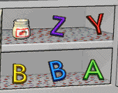
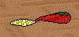
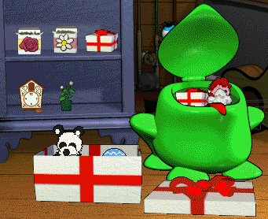
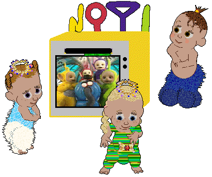
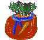
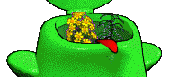

The kitchen magnets, separated out and made to show up in the kitchen
closet. This one is for people who find that their magnets disappear, also
for hexers who want to make a range of magnets of their own. They don't
overwrite the original, and as far as I know you cannot put them back in
the closet, so take care how you litter the kitchen with them, LOL!

separate magnets
The Christmas Spoon, made originally for DRN's 2005 Advent Calendar. You
will find that food looks different when it's on this spoon :-)

Christmas Spoon
The "Surprise" toy, made to show up in your attic closet. This seems to be
a toy that the makers forgot about; in the Petz 4 game, the surprise is
that there's a bubble machine inside. In Babyz, the makers forgot to
delete the bubble machine filmstrips when they made that toy separate, and
they didn't finish the box off. I've finished it off for you, and now the
"surprise" is that you can use it to stuff more toyz into your toychestz,
LOL! It overwrites the original. Version 1 is the standard box with lid,
version 2 has a surprise lid :-) Hexers may be interested in version 2,
which gives something extra to fiddle with.

"Surprise" box
"Surprise" box version 2
At last! The Teletubbies comes to amuse your Babyz! LOL... This will
overwrite your Record Player and Record toyz, so make sure that you have
them somewhere safe. You may get tired of seeing your babyz eternally
watching TV, even when you're playing classy music :-)
Your babyz will dance to the teletubbies music when you put the tape into
the slot.
Thanks to Kittycat of Waterfall Heaven for the idea, the music and a
bunch of basic graphics which I altered, added to and made into the toyz;
this is really a kind of "team creation". Note that although the
teletubbies disco music is supposed to come on when you insert the little
tape from the shelf, you may sometimes find that the music is actually
linked to a different record. That's just a random quirk of the game.

Teletubbies TV
If you have problems with the toy not showing up correctly, download this
version instead:
Teletubbies TV version 2
This one is a complete toy with everything inside -- go to my tutorials
page if you want my external-files one. This was made as I went through
the steps myself when answering a couple of people who wanted to know how
to make their treats show up properly. The Howto and example toy are on my
tutorials page.

Healthy Carrot Treats
Another special request, this time from Liz as well as Dani. This toy
overwrites the original Stuffed Man, and shows up in the playroom closet.
It's the toy to use if you want to make a doll or similar type of toy, but
don't want to have to fiddle with .lnz files. People who want to change
the look of their stuffed man can of course use Tinker, available on this
site's "Nicholas' tools" page :-)
Download the Stuffed Man toy
These two plants can now be put back on the playroom and attic shelves,
plus they can now be moved between scenes in the toychest. The Babyz will
be a bit more interested in them than they used to be.

Tall Green Plant
Yellow Flowers Plant